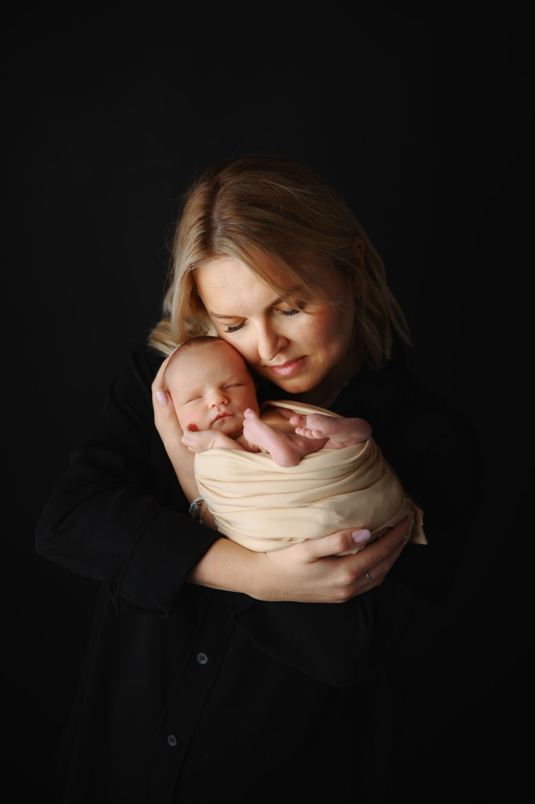
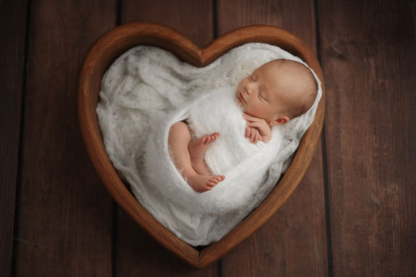
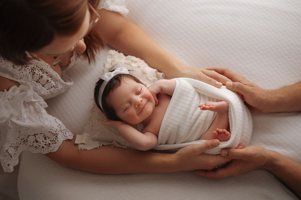
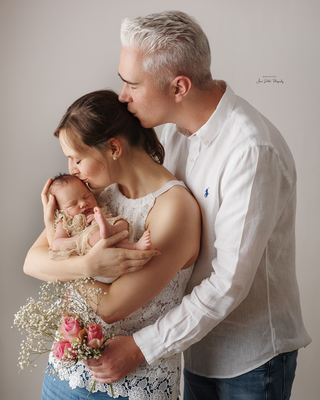
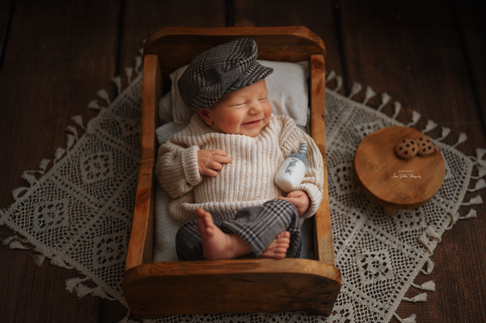
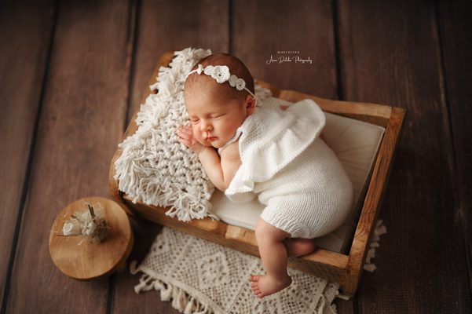

BLOG KATEGORIE
Neugeborenenfotografie
Wissen, Sicherheit und wertvolle Tipps rund um die ersten Lebenstage Ihres Babys. Hier finden Sie alle Artikel über Vorbereitung, Ablauf, Sicherheit und emotionale Erinnerungen aus meinem Studio in Walzbachtal bei Karlsruhe.

Ist Neugeborenenfotografie sicher?
Alles was Eltern vor einem professionellen Shooting wissen sollten.

Wie bereitet man sich auf ein Neugeborenen-Shooting vor?
Die wichtigsten Tipps für entspannte Eltern und ein ruhiges Baby.

Wie läuft ein Neugeborenenshooting ab?
Ein Blick hinter die Kulissen meines Studios.

Wie viel kostet ein Neugeborenenshooting?
Was hinter professioneller Fotografie wirklich steckt.

Was tun, wenn das Baby viel schreit?
Tipps für entspannte Shootings mit Neugeborenen.

Boho Lifestyle oder klassisch posiert?
Welche Bildsprache passt zu Ihrer Familie?

Warum im Studio und nicht im Krankenhaus?
Die Vorteile eines professionellen Studioshootings.

Lohnt sich ein saisonales Shooting?
Warum Erinnerungen im Wandel der Jahreszeiten so besonders sind.

Wenn Fotografie leise wird
Meine persönliche Definition von Fine Art Fotografie.